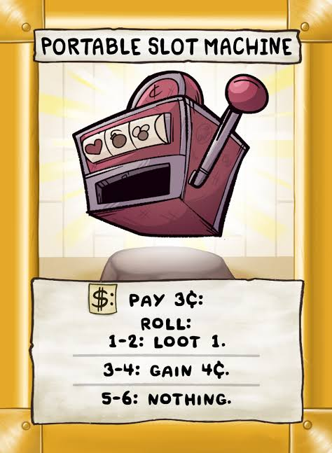

Isaac's Slot Machine
Final Project for the MAT111PC Course / Ongoing Personal Project to make a fully-functioning toy
Conception

MAT111: Physical Computing was a course offered as part of the Media Arts & Design minor at UCSB. During the course, we learned how to build circuits with Arduino, and encouraged to build essentially anything with Input and Output for the final project. Being hyperfixated on the Binding of Isaac videogame at the time, I thought it might be fun to make something inspired by it. Not just something that would work, but something that I could hold on to myself after the class and enjoy as a novelty.